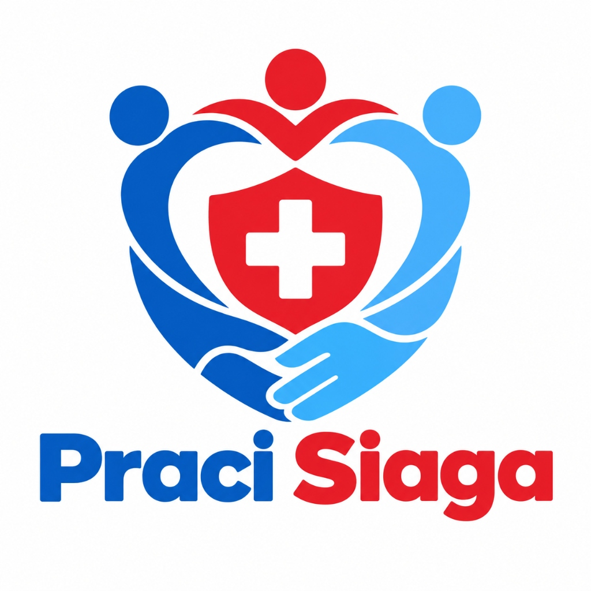
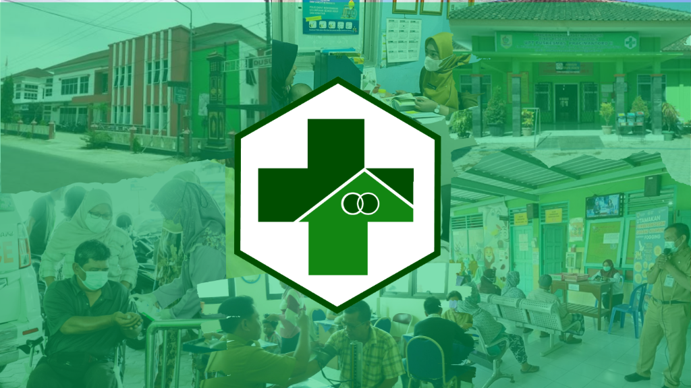
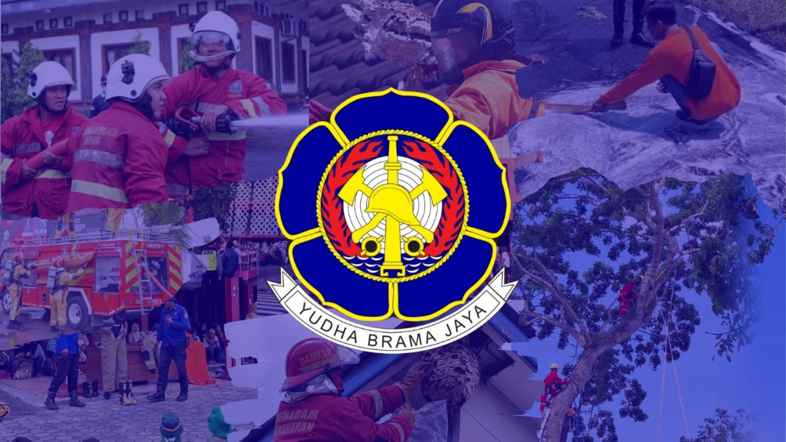
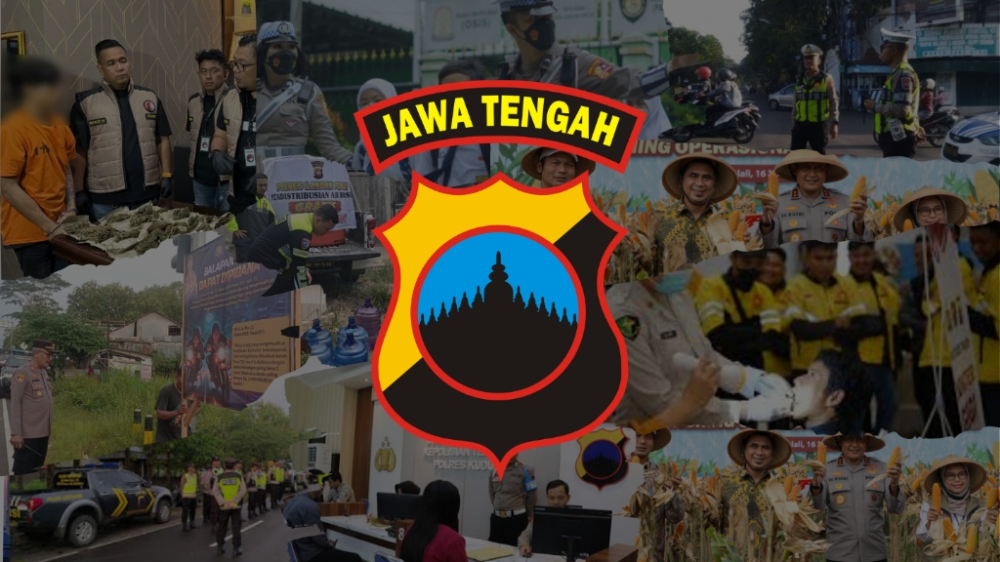
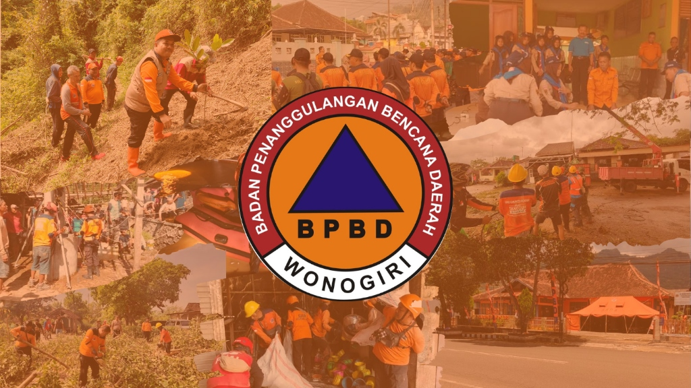
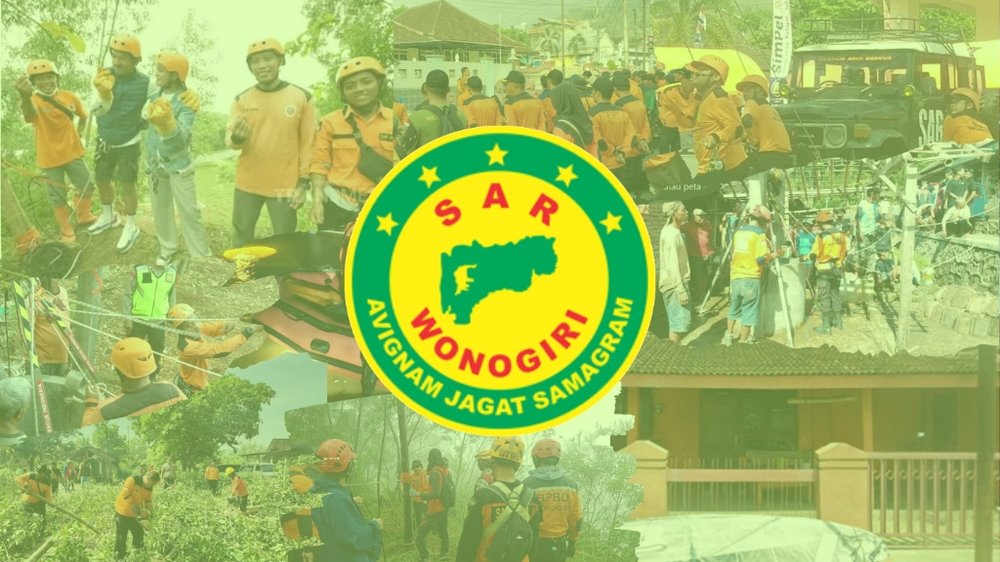
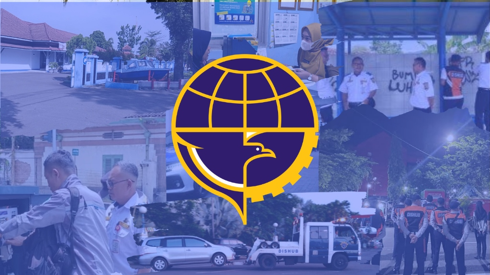
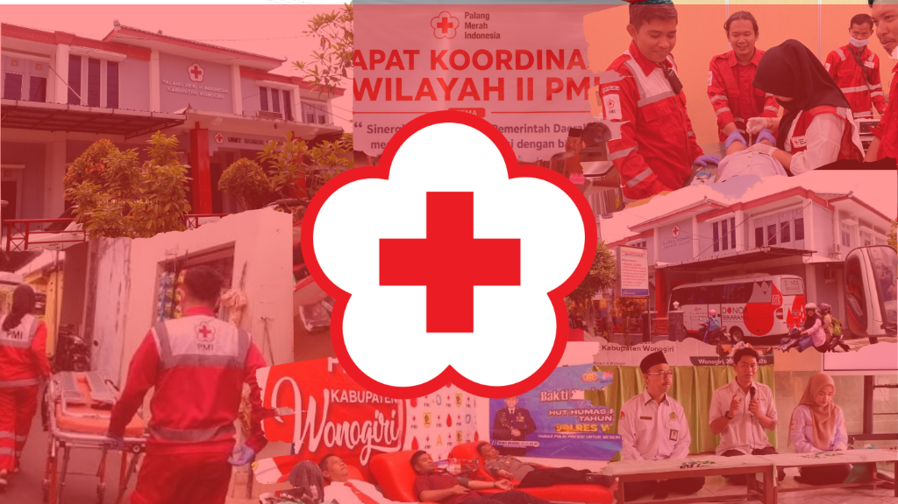
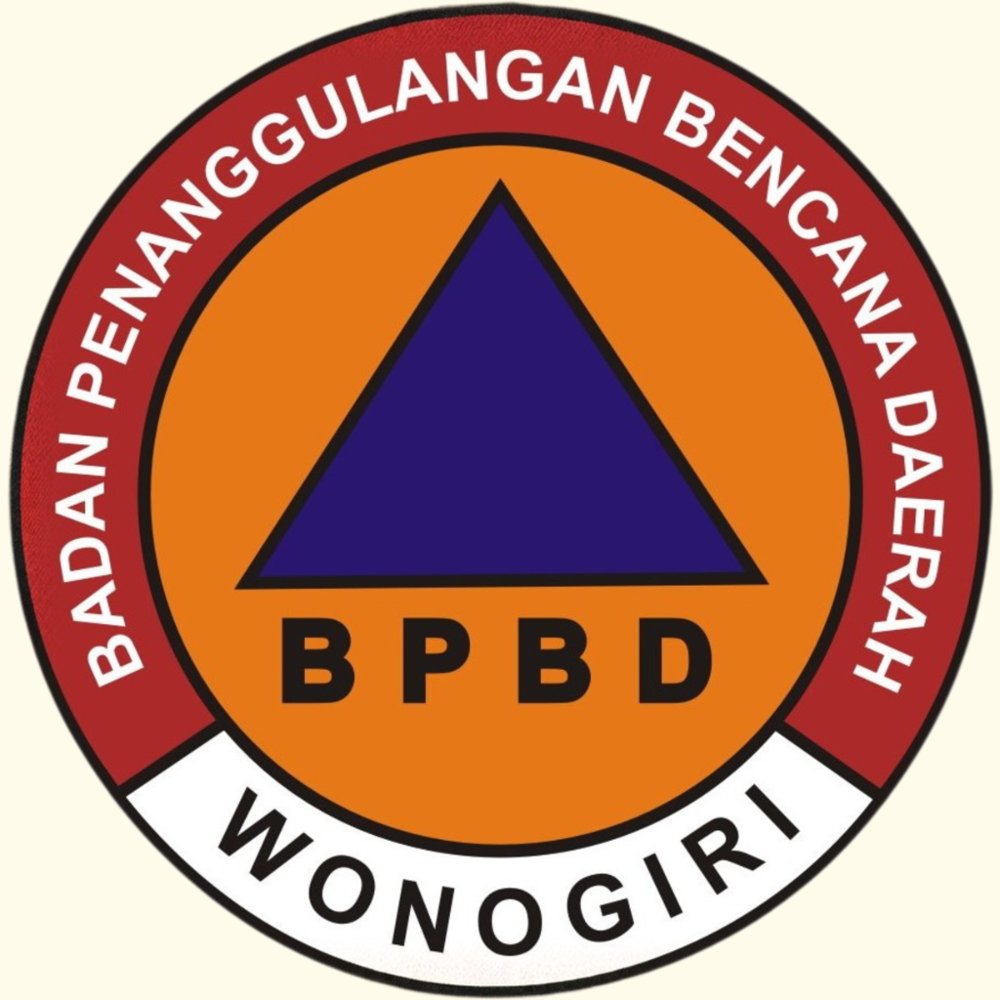

Cari Layanan Darurat
Instansi Layanan Darurat
Tidak ada layanan yang cocok.
Coba kata kunci lain seperti "ambulans", "polisi", atau "bencana".
Selamat Datang di
Informasi & Akses Cepat Layanan Darurat Terintegrasi
Kecamatan Pracimantoro · Wonogiri
Pilih menu yang Anda butuhkan:
© 2026 PRACI SIAGA · Hak Cipta Dilindungi · TEGAR.S.A







Tidak ada layanan yang cocok.
Coba kata kunci lain seperti "ambulans", "polisi", atau "bencana".Klik atau geser penanda untuk menentukan alamat lokasi tepat
Pusat informasi layanan kepolisian & panduan kedaruratan masyarakat
SPKT bertugas memberikan pelayanan kepolisian secara terpadu terhadap laporan/pengaduan masyarakat, memberikan bantuan dan pertolongan, serta memberikan pelayanan informasi.
Sentra Pelayanan Kepolisian Terpadu (SPKT) siap melayani berbagai dokumen resmi dan perizinan masyarakat berikut:
Pilih salah satu tab di bawah untuk melihat alur tahapan secara runtut:
Masyarakat menyiapkan pengaduan, kronologis kejadian, data pendukung, serta identitas diri.
Pengaduan dapat disampaikan secara lisan melalui telepon/HP atau dengan datang langsung ke ruang SPKT.
Jika datang langsung ke ruang pelayanan SPKT, masyarakat melakukan:
Pengaduan diterima secara resmi oleh Ka Siaga SPKT / Piket Fungsi Siaga.
Petugas melakukan kajian awal atau gelar awal terhadap pokok materi serta bukti pengaduan.
Setelah kajian awal, petugas menetapkan putusan resmi mengenai bentuk tindak lanjut pengaduan.
Berdasarkan putusan kajian, pengaduan dapat ditindaklanjuti dengan salah satu opsi berikut:
Masyarakat korban / pelapor datang langsung ke Sentra Pelayanan Kepolisian Terpadu (SPKT).
Masyarakat mendapatkan pelayanan di Ruang Pelayanan Pengaduan yang meliputi:
Selanjutnya petugas melakukan pendalaman terhadap laporan dan kronologi peristiwa.
Berdasarkan hasil pendalaman, laporan disalurkan kepada satuan fungsi yang sesuai:
Untuk laporan yang ditangani oleh Satreskrim, Satresnarkoba, atau Sat Propam, dilakukan proses:
Laporan masuk ke tahap Pengawasan Penyidikan (Wassidik) untuk memastikan akuntabilitas proses hukum.
Setelah tahap Wassidik, berkas laporan disalurkan sesuai dengan kebutuhan penanganannya.
Jika laporan perlu diteruskan ke instansi terkait, Siaga SPKT menerbitkan surat pengantar ke:
Apabila laporan ditangani langsung oleh Piket Reskrim, proses meliputi:
Penyidik melanjutkan proses penyelidikan dan penyidikan formal berdasarkan hukum acara pidana.
Perkembangan hasil penyidikan disampaikan secara berkala kepada pelapor melalui SP2HP (Surat Pemberitahuan Perkembangan Hasil Penyidikan).
Pemadam Kebakaran (Damkar) merupakan layanan tanggap darurat yang bertugas menangani kebakaran, penyelamatan, serta berbagai kondisi darurat yang membahayakan keselamatan masyarakat. Selain memadamkan api, petugas Damkar juga memiliki peran dalam penyelamatan korban, penanganan bahan berbahaya, evakuasi hewan, hingga pencegahan kebakaran.
Layanan operasional tanggap darurat dan penyelamatan oleh petugas Pemadam Kebakaran:
Petugas Damkar bertugas menangani dan memadamkan kebakaran yang terjadi di berbagai lokasi, seperti rumah, gedung, perkantoran, kawasan industri, kendaraan, hutan, maupun lahan. Respons yang cepat dan tepat sangat penting untuk mencegah api meluas serta melindungi jiwa dan harta benda.
Damkar juga membantu menyelamatkan dan mengevakuasi korban dalam berbagai situasi darurat, seperti terjebak di dalam bangunan, lift, kendaraan, sumur, saluran air, maupun lokasi yang sulit dijangkau. Penyelamatan juga dapat dilakukan dalam kondisi bencana tertentu.
Petugas Damkar dapat menangani keadaan darurat yang melibatkan bahan berbahaya dan beracun (B3), seperti kebocoran gas atau tumpahan bahan kimia. Penanganan dilakukan dengan prosedur keselamatan untuk mengurangi risiko kebakaran, ledakan, kontaminasi, maupun keracunan.
Damkar juga dapat membantu masyarakat dalam menangani hewan berbahaya atau hewan yang terjebak, seperti ular, lebah, biawak, atau hewan lain yang berada di tempat yang membahayakan manusia maupun hewan tersebut.
Dalam kecelakaan lalu lintas, petugas Damkar dapat membantu mengevakuasi korban yang terjebak di dalam kendaraan menggunakan peralatan penyelamatan. Jika diperlukan, petugas juga memberikan pertolongan awal sambil menunggu atau berkoordinasi dengan layanan medis.
Di wilayah yang memiliki kewenangan dan layanan terkait, Damkar dapat melakukan pemeriksaan sistem proteksi kebakaran pada bangunan, fasilitas umum, tempat usaha, maupun kawasan tertentu untuk membantu memastikan kesiapan menghadapi risiko kebakaran.
Damkar turut melakukan sosialisasi dan edukasi kepada masyarakat mengenai penyebab kebakaran, langkah pencegahan, penggunaan peralatan keselamatan, serta tindakan yang harus dilakukan ketika terjadi kebakaran.
Damkar dapat memberikan pelatihan kepada masyarakat, relawan, sekolah, maupun lingkungan kerja mengenai penggunaan APAR, prosedur evakuasi, pertolongan awal, dan simulasi menghadapi keadaan darurat kebakaran.
Tetap tenang dan segera lakukan langkah-langkah darurat berikut:
Layanan: Pemadam Kebakaran (Damkar)
Jenis layanan: Kebakaran, penyelamatan, evakuasi, dan keadaan darurat terkait
Cakupan: Menyesuaikan wilayah dan kewenangan Damkar setempat
Nomor darurat: Gunakan nomor Damkar / layanan darurat resmi di wilayah Anda.
Puskesmas merupakan fasilitas pelayanan kesehatan tingkat pertama yang memberikan pelayanan kesehatan kepada masyarakat, mulai dari pemeriksaan dan pengobatan hingga pelayanan kesehatan ibu dan anak serta pencegahan penyakit.
Fasilitas pelayanan kesehatan dasar yang disediakan untuk seluruh lapisan masyarakat:
Melayani pemeriksaan kondisi kesehatan dan penanganan berbagai keluhan atau penyakit yang dapat ditangani di tingkat Puskesmas.
Meliputi pelayanan kesehatan ibu hamil, ibu menyusui, bayi, balita, dan anak, termasuk pemantauan tumbuh kembang.
Memberikan pelayanan imunisasi sesuai program kesehatan untuk membantu melindungi masyarakat dari berbagai penyakit yang dapat dicegah dengan imunisasi.
Pemeriksaan dan pemantauan kesehatan bagi masyarakat lanjut usia, termasuk pemeriksaan kondisi kesehatan secara berkala.
Melayani pemeriksaan dan penanganan dasar terkait kesehatan gigi dan mulut.
Melakukan upaya untuk menjaga kesehatan lingkungan, termasuk edukasi mengenai air bersih, sanitasi, kebersihan lingkungan, dan perilaku hidup bersih dan sehat.
Melakukan pemeriksaan, pencegahan, serta pemantauan berbagai penyakit menular maupun penyakit tidak menular seperti hipertensi dan diabetes.
Memberikan obat sesuai hasil pemeriksaan dan resep atau ketentuan pelayanan yang berlaku di Puskesmas.
Memberikan penanganan awal terhadap kondisi yang membutuhkan pertolongan segera sesuai kemampuan dan fasilitas Puskesmas.
Memberikan informasi dan edukasi mengenai pola hidup sehat, pencegahan penyakit, penggunaan obat, serta perawatan kesehatan.
Untuk mendapatkan pelayanan kesehatan di Puskesmas, masyarakat dapat menyiapkan dokumen berikut:
Catatan: Persyaratan administrasi dapat berbeda tergantung jenis pelayanan dan ketentuan yang berlaku. Sebaiknya tanyakan kepada petugas Puskesmas jika terdapat persyaratan khusus.
Rujukan ke rumah sakit tidak selalu diperlukan. Jika kondisi pasien dapat ditangani di Puskesmas, pasien akan mendapatkan pelayanan di Puskesmas. Apabila berdasarkan pemeriksaan dokter pasien membutuhkan pemeriksaan atau penanganan lebih lanjut yang tidak tersedia di Puskesmas, dokter dapat memberikan rujukan sesuai ketentuan yang berlaku.

Badan Penanggulangan Bencana Daerah (BPBD) merupakan instansi yang bertugas dalam penanggulangan bencana, mulai dari pencegahan dan kesiapsiagaan, penanganan keadaan darurat, hingga pemulihan setelah bencana.
Ruang lingkup tugas dan pelayanan Badan Penanggulangan Bencana Daerah:
BPBD menangani berbagai kejadian bencana dan keadaan darurat, antara lain: banjir, tanah longsor, angin kencang, gempa bumi, kekeringan, tanah ambles atau tanah bergerak, kebakaran tertentu, serta bencana dan kejadian darurat lainnya.
BPBD membantu proses pencarian, penyelamatan, dan evakuasi masyarakat yang terdampak bencana. Dalam pelaksanaannya, BPBD dapat berkoordinasi dengan TNI, Polri, Damkar, PMI, tenaga kesehatan, relawan, dan instansi terkait.
BPBD melakukan pendataan dan koordinasi penanganan terhadap dampak bencana, termasuk kondisi lingkungan, kerusakan, serta kebutuhan masyarakat yang terdampak.
BPBD membantu penyaluran kebutuhan darurat dan logistik kepada masyarakat yang terdampak sesuai kondisi dan kebutuhan di lapangan.
BPBD dapat melakukan penanganan kekeringan, termasuk membantu distribusi air bersih ke wilayah yang mengalami kesulitan mendapatkan air.
Masyarakat dapat melaporkan kejadian bencana kepada BPBD untuk mendapatkan penanganan dan koordinasi lebih lanjut.
BPBD melakukan pemantauan terhadap potensi dan risiko bencana serta menyampaikan informasi yang dapat membantu masyarakat meningkatkan kewaspadaan.
BPBD memberikan sosialisasi, edukasi, pelatihan, dan simulasi kepada masyarakat, sekolah, relawan, maupun kelompok lainnya untuk meningkatkan kesiapsiagaan menghadapi bencana.
Setelah keadaan darurat, BPBD turut mendukung proses pemulihan, rehabilitasi, dan rekonstruksi sesuai kewenangan dan kondisi bencana.
Tahapan pelaporan kejadian darurat dan bencana oleh masyarakat ke BPBD:
Layanan pencarian dan pertolongan (Search and Rescue) kedaruratan untuk penanganan musibah, orang hilang, dan evakuasi korban bencana alam di wilayah Wonogiri dan sekitarnya.
Informasi lengkap mengenai layanan SAR Wonogiri akan segera tersedia.
Layanan perhubungan terpadu, pengaturan keselamatan transportasi darat, perlengkapan jalan, dan rekayasa lalu lintas Kabupaten Wonogiri.
Informasi lengkap mengenai layanan Dinas Perhubungan Wonogiri akan segera tersedia.
Layanan kemanusiaan Palang Merah Indonesia (PMI) meliputi unit donor darah, ambulans gawat darurat, pertolongan pertama, dan bantuan tanggap bencana.
Informasi lengkap mengenai layanan Palang Merah Indonesia (PMI) Wonogiri akan segera tersedia.